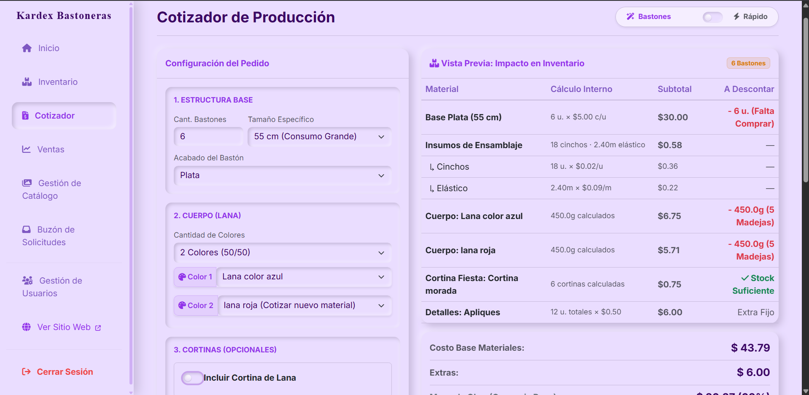

Diseño de Interfaz
Galería UI & UX
Capturas del ecosistema aplicando el sistema de diseño Soft Neumorphism, optimizado para legibilidad durante largas sesiones operativas.

Cotizador Automático
Renderizado condicional del DOM.

Catálogo Público
Vitrinas B2C y modales Built-to-Order.

Historial de Ventas
Tablas interactivas y KPIs en tiempo real.

Inventario Kardex
Alta densidad orientada a la productividad.